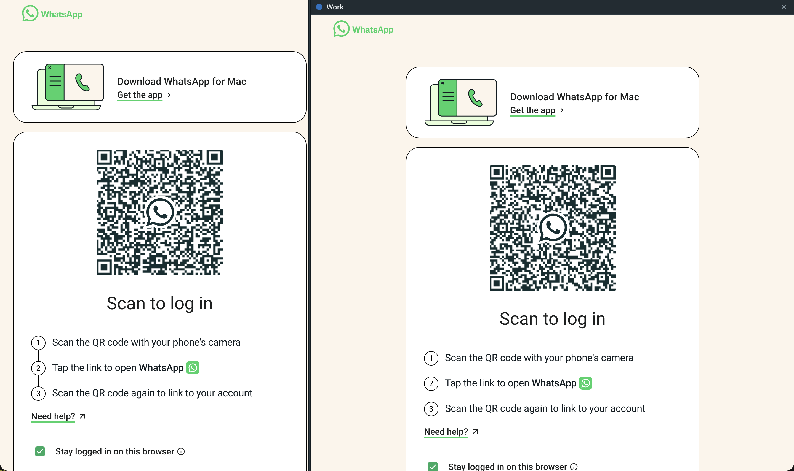

A desktop app for people who carry more than one WhatsApp: personal, work, the support line. Each account is a tab, every tab stays signed in.

MultiWA is a shell around WhatsApp Web. It adds the things a browser tab cannot give you and changes nothing about WhatsApp itself.
Click +. A fresh, empty WhatsApp Web opens in the new tab, with its own session.
On your phone, open WhatsApp → Linked devices → Link a device, and scan. That account is now linked to this tab only.
Repeat for every account. Switching tabs is instant; nothing reloads. Closing a tab removes that account from this computer, after asking you.
All of this is enforced in code you can read: the navigation allow-list, the permission policy and the sandboxed view settings live in src/main/security, and a test suite checks that the WhatsApp view never gets a bridge. Details in SECURITY.md.
Signed and notarized. Pick the Apple silicon or Intel disk image, drag MultiWA to Applications. Updates install themselves.
Get the latest releasePer-user installer, no admin rights needed. The installer is not code-signed yet, so SmartScreen will ask once: choose More info, then Run anyway.
Get the latest release